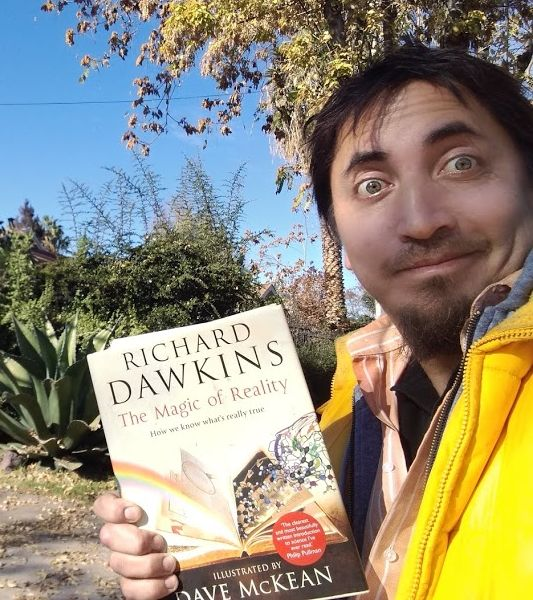
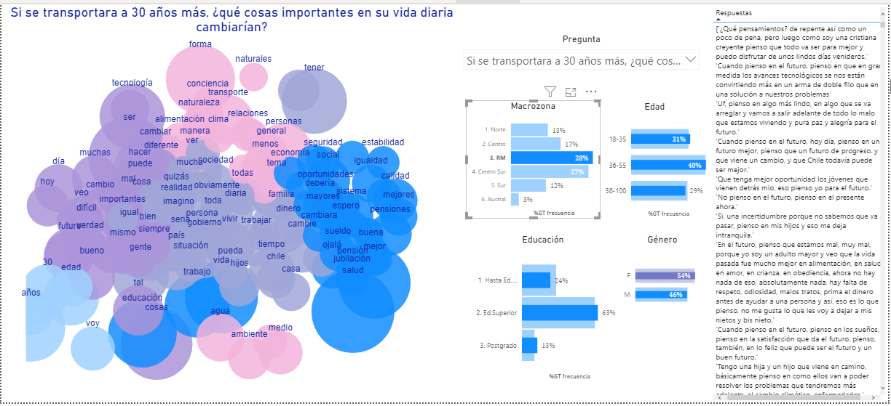

|  |
| Compuesto por Sergio Lucero, ingeniero civil matemático (Universidad de Chile) y analista cuantitativo y José Manuel Ferreiro, doctor en Lingüística (Lancaster University) el equipo que montó este estudio para Greenpeace se destaca por generar visualizaciones de conceptos semánticos en entornos de grandes cantidades de datos. Esto fue demostrado en su trabajo para el estudio Dialogos de Futuro, llevado a cabo en conjunto con Merlin entre el 2019 y el 2020. |
Clusters |